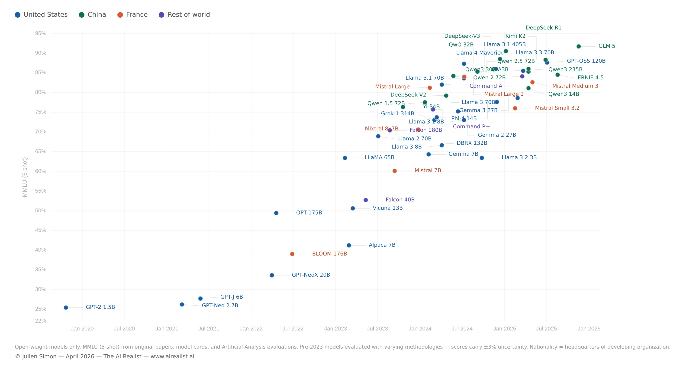
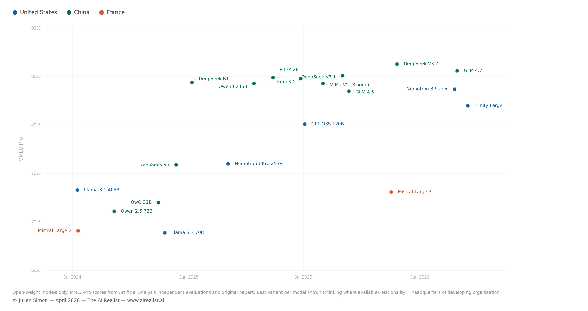

In October 2021, I published a blog post on Hugging Face titled “Large Language Models: A New Moore’s Law?” I had just joined as Chief Evangelist. Microsoft and Nvidia unveiled the long-forgotten Megatron-Turing NLG 530B, and the industry celebrated. I was not. The post argued that the mega-model arms race was a dead end — exponential parameter growth producing diminishing returns at escalating cost. Use pretrained models. Use smaller models. Fine-tune. Optimize. The reactions ranged from skeptical to hostile.[1]
Almost five years later, the most downloaded open model family in the world is Qwen, and the models driving those numbers are the 7-billion- and 14-billion-parameter variants, fine-tuned into over 200,000 derivatives, running on laptops and single GPUs.[2] Alibaba’s single-month downloads in December 2025 exceeded the combined total of the next eight most popular model families.[3]
The model that prompted that blog post — Megatron-Turing NLG 530B, trained on 560 DGX A100 servers at a cost I estimated in the tens of millions — scored roughly 87% on the commonsense reasoning benchmark HellaSwag, state of the art at the time.[4] That benchmark is now too easy to report. Modern model evaluations have moved on to harder tests — MMLU, GPQA, AIME, SWE-bench — because models saturated HellaSwag years ago. Qwen3-14B scores 81% on MMLU, handles context windows over fifteen times longer natively, and runs on a consumer GPU.[5] It has 38 times fewer parameters. A 4-billion-parameter model, fine-tuned for a specific task, can match or exceed a 120-billion-parameter teacher.[6]
The scaling laws that justified the mega-model trend were not wrong: they were misapplied. DeepMind’s Chinchilla paper, published five months after my blog post, proved it: the field had been building models that were too big and undertrained.[7] The answer was never more parameters. It was more data, better training recipes, and relentless engineering optimization. The scaling race produced useful research: distillation requires a teacher, and you cannot compress knowledge that was never learned. But the blog post wasn’t about research. It was about the industry consensus that bigger was the only path forward, and that anyone who couldn’t afford hundreds of DGX servers was locked out. That consensus was wrong. The practitioners who fine-tuned, optimized, and compressed were the ones who put AI into production. The scaling-era mega-models produced papers. The small models produced products.
But the path from that blog post to the current landscape also passed through a French supercomputer, a $300 training run, a Bulgarian C++ project with zero dependencies, and a geopolitical shift that none of us anticipated.
The open model revolution happened in three phases. The first was idealistic. The second was corporate. The third was geopolitical. At every stage, the engineering that made models runnable on real hardware mattered more than the architecture that made them intelligent. And at the end of the arc, the movement built to democratize AI handed ecosystem leadership to a handful of Chinese labs, not because the system failed, but because it worked exactly as designed.
The Fork
The modern history of open models begins with a fork.
In 2017, Google researchers published “Attention Is All You Need,” introducing the Transformer architecture.[8] Within eighteen months, two teams had taken it in opposite directions. OpenAI built GPT-1 in June 2018 — a decoder-only, generative model, designed to predict the next token.[9] Google built BERT in October 2018 — an encoder-only, bidirectional model, designed to understand context from both directions simultaneously.[10]
The critical difference was not architectural. It was strategic. Google released BERT’s weights, code, and training methodology to the public. BERT became “ubiquitous.”[11] Thousands of papers have been built on it. The Hugging Face Transformers library, which would become the connective tissue of the open ecosystem, was initially built to make BERT accessible.[12] OpenAI chose differently. GPT-2, arriving in February 2019 with 1.5 billion parameters, was initially withheld — “too dangerous to release.”[13] GPT-3, with 175 billion parameters, launched in June 2020 as an API-only service. No weights. No code. The most powerful language model in the world was a black box you rented by the token.[14] One path created a research ecosystem. The other created a product category. And for the next two years, the closed path looked like the future — GPT-3’s in-context learning was genuinely stunning, the API model made it accessible, and the consensus formed that scale required resources held by only a handful of organizations.
The Democratic Experiment
The first serious attempts to build open alternatives to GPT-3 were driven by principle as much as engineering.
EleutherAI, a grassroots collective of researchers, released GPT-J (6B parameters) in 2021 and GPT-NeoX-20B in 2022 — open-source models explicitly designed as alternatives to the closed GPT series.[15] They were credible for their size, but they were not competitive with GPT-3. The gap was real. Meta’s OPT-175B, released in May 2022, was the first open model to match GPT-3’s parameter count, accompanied by code, training logbook, and weights — a deliberate act of transparency.[16] It narrowed the gap further but didn’t close it.
The most ambitious attempt was BLOOM. Led by Hugging Face through the BigScience workshop, BLOOM was a 176-billion-parameter multilingual model trained by over 1,000 researchers across hundreds of institutions, on the Jean Zay supercomputer funded by the French government.[17] Training ran from March to July 2022 on 384 A100 GPUs. It covered 46 natural languages and 13 programming languages, and it was released under the Responsible AI License.[18]
BLOOM was the high-water mark of the “open AI as public good” vision — multinational, volunteer-driven, publicly funded, transparently documented. It was also, honestly, a mixed result. The model performed competitively on multilingual benchmarks, but it did not match the best proprietary models on English-language tasks, and its adoption never reached the critical mass that BERT had achieved.[19] The ambition was extraordinary and the execution was genuine (I was at Hugging Face for the entire project), but the lesson was uncomfortable: a thousand researchers and a government supercomputer could produce a model that was good, not a model that was dominant.[20] Scale required not just compute but the kind of ruthless iteration on data quality and training recipes that a consensus-driven research workshop struggled to achieve.

Then, in November 2022, OpenAI released ChatGPT. And the competition's terms changed overnight.
The $300 Proof
ChatGPT did not introduce new capabilities. GPT-3 could already do most of what ChatGPT demonstrated. ChatGPT’s innovation was the interface — a conversational wrapper around instruction-tuned GPT-3.5 that made language models comprehensible to non-technical users. It reached 100 million users within two months.[21] The industry panicked. Every organization wanted a ChatGPT-equivalent, and the closed model providers held all the keys.
Meta had been moving toward open release for months. In February 2023, it announced LLaMA — a family of models from 7 to 65 billion parameters that outperformed GPT-3 on most benchmarks despite being dramatically smaller.[22] The initial release was restricted to approved researchers under a non-commercial license, but within a week, the weights appeared on 4chan via BitTorrent.[23] The leak made headlines, but it was less consequential than it seemed at the time. Meta was already heading toward open commercial release — Llama 2 arrived with a commercial license just five months later.[24] The engineering community that would build on LLaMA didn’t need the leak; it needed the model, and Meta would provide it.
What mattered more than the leak was what happened in the two weeks after. On March 13, Stanford released Alpaca — LLaMA 7B fine-tuned on 52,000 instruction-following examples generated by GPT-3.5. Total training cost: under $600. Performance: comparable to text-davinci-003 on the team’s evaluation.[25] Two weeks later, a group from UC Berkeley, CMU, Stanford, and UCSD released Vicuna-13B — LLaMA fine-tuned on 70,000 conversations scraped from ShareGPT. Cost: approximately $300. A preliminary evaluation using GPT-4 as a judge rated it at 90% of ChatGPT’s quality.[26]
These were not frontier models. The benchmarks were rough, the evaluations informal, and the comparison to ChatGPT was generous. But the structural revelation was precise: the gap between a base model and a useful chatbot did not require the billions of dollars the industry had assumed it did. It was a weekend, a few hundred dollars, and a clever dataset. The expensive part was pretraining. The valuable part — instruction following, conversational fluency, task completion — could be added cheaply.
This finding validated the core argument of the October 2021 blog post, though not in the way I had anticipated. I had argued for using smaller pretrained models and fine-tuning them. Alpaca and Vicuna proved the economics. A 7B model, fine-tuned on synthetic data for the cost of a plane ticket, could approximate a frontier product. The mega-model consensus didn’t just produce diminishing returns. It had been solving the wrong problem. The bottleneck was never raw intelligence at the base layer. It was the efficiency of the last mile: instruction tuning, alignment, and the engineering to make inference fast on real hardware.
The Engineering Revolution
The models were necessary. The engineering was sufficient.
In March 2023 — two weeks after the LLaMA release — Georgi Gerganov published llama.cpp: a pure C/C++ implementation of LLaMA inference with zero dependencies.[27] It ran on the CPU. No GPU required. No Python. No PyTorch. No CUDA. A laptop could run a 7-billion-parameter language model. By August 2023, Gerganov’s project had introduced the GGUF file format — a self-contained binary that bundled model weights, tokenizer, and metadata into a single downloadable file.[28] When a new model dropped on Hugging Face, GGUF-quantized versions appeared within hours. GGUF became the de facto standard for distributable AI models. As of early 2026, llama.cpp has over 85,000 GitHub stars and supports dozens of architectures.[29]
Quantization — compressing model weights from 16-bit floating point to 4-bit integers with manageable quality loss — was the technical mechanism that made local inference possible. The GGUF K-quant variants use mixed-precision per layer, allocating more bits to the layers that matter most. The practical sweet spot, Q4_K_M — a 4-bit mixed-precision quantization scheme — retains roughly 92% of the original model’s quality while reducing size by 75%.[30] A 7B model that requires 14 GB in full precision fits comfortably in 4 GB quantized. A 70B model that needs 140 GB fits in 40 GB — within reach of a Mac Mini with unified memory.
Flash Attention, published by Tri Dao in 2022, was equally consequential and even less glamorous.[31] By rewriting the attention computation to be IO-aware — minimizing memory reads and writes rather than raw floating-point operations — Flash Attention delivered 2–4× faster attention with a lower memory footprint. It enabled longer context lengths on the same hardware. It was adopted across virtually every major framework. It was added to llama.cpp in April 2024.[32] If you use a language model in 2026, you are almost certainly benefiting from Flash Attention, whether you know it or not.
Continuous batching, pioneered by vLLM’s PagedAttention system in 2023, transformed inference serving.[33] By managing the key-value cache — the memory that stores the context of a conversation — like virtual memory pages, vLLM dramatically improved throughput for concurrent requests — the reason inference providers can serve thousands of users per GPU and offer competitive per-token pricing. Speculative decoding — using a small draft model to generate candidate tokens, which are then verified by the larger model — added another 2–3× speedup for interactive use cases.[34]
None of these innovations changed what models could do. All of them changed who could run models and at what cost. Flash Attention, quantization, llama.cpp, GGUF, continuous batching, speculative decoding: these are the unglamorous infrastructure achievements that made the open model revolution a reality rather than a research curiosity. The Transformer architecture matters. But the engineering that makes Transformers affordable on real hardware is what differentiated the open model ecosystem from the closed one.
Same Knowledge, Faster Speed
Mixture-of-Experts was the architectural innovation that made open models economically viable at the frontier scale.
The concept is straightforward: instead of activating all parameters for every token, route each token through a subset of specialized “expert” subnetworks. The model retains the knowledge capacity of its full parameter count but runs at the inference cost of its active parameter count. MoE had been explored in research for years, but Mistral’s Mixtral 8x7B, released in January 2024 under an Apache 2.0 license, was the first widely adopted open MoE.[35] With 46.7 billion total parameters and roughly 12.9 billion active per token, it competed with Llama 2 70B at a fraction of the inference cost.
DeepSeek V3, released in December 2024, scaled MoE to 671 billion total parameters with 37 billion active — and reportedly trained for approximately $5.5 million, a figure that stunned the industry.[36] Qwen 3, released in April 2025, deployed a 235-billion-parameter MoE with 22 billion active parameters across 119 languages.[37] Arcee AI’s Trinity Large, released in January 2026 and upgraded to a full reasoning model in April, pushed sparsity further: 400 billion total parameters, 13 billion active, 256 experts with 4 active per token. A 30-person U.S. startup trained a frontier-class model in 33 days on 2,048 Nvidia B300 GPUs for approximately $20 million — and its reasoning variant now ranks as the number one open model in the U.S. on OpenRouter.[38]
MoE dissolved the equation that had defined the scaling era: bigger meant better meant more expensive to run. A 400B MoE with 13B active parameters runs 2–3× faster than a comparable dense model on the same hardware.[39] The knowledge is in the total parameter count. The cost is in the active parameter count. All parameters still load into memory — the hardware requirement doesn’t shrink proportionally — but if the model fits, the speed advantage is dramatic. This is why open models can compete at frontier scale — the effective inference cost is an order of magnitude less than the headline parameter count suggests.
Qwen3-30B-A3B makes the point concrete. Thirty billion total parameters, 3 billion active per token. It runs at 196 tokens per second on a single RTX 4090 — faster than 8-billion-parameter dense models — with quality competitive with models five times its active size.[40] The model that prompted the October 2021 blog post had 530 billion parameters and required 560 DGX A100 servers. This one fits on a gaming GPU.
The Architecture That Didn’t Die
Every year since 2023, someone has announced the Transformer's death. It hasn’t happened.
Mamba, published by Albert Gu and Tri Dao in December 2023, introduced a selective state space model that achieved linear-time inference — compared to the Transformer’s quadratic scaling with sequence length — and demonstrated 5× throughput gains on long sequences.[41] The LinkedIn posts wrote themselves. AI21 Labs shipped Jamba in March 2024, the first production-grade hybrid: interleaving Mamba and Transformer layers at a 1:7 ratio, with MoE on top, achieving 256K-token context on a single 80GB GPU.[42] IBM built Granite 4.0 on a hybrid SSM architecture. Nvidia’s Nemotron-H replaced 92% of attention layers with Mamba2 blocks and demonstrated 3× throughput over comparable Transformers.[43]
The hybrids are real, and in specific deployment niches — such as long-context inference and memory-constrained edge devices — they are superior. But they haven’t displaced the Transformer for general-purpose language modeling. IBM’s own evaluation found that pure SSM models still fall behind on tasks requiring strong associative recall or in-context learning.[44] The practical verdict, as of early 2026, is that architecture choice has become a deployment decision rather than a research religion. Pure Transformers dominate general-purpose tasks. Hybrids win on efficiency for specific workloads. Nobody who bet their company on “Mamba kills Transformers” has been rewarded.
Meanwhile, the Transformer itself kept evolving, quietly, incrementally. Grouped-Query Attention reduced KV-cache memory.[45] Multi-Head Latent Attention, introduced in DeepSeek V3, further compressed it.[46] Rotary Position Embeddings enabled flexible context lengths. SwiGLU replaced GELU in feed-forward layers. Each refinement was incremental. Together, they compounded into models dramatically more efficient than GPT-3’s architecture while remaining recognizably Transformers.
Sebastian Raschka, surveying the architectural landscape in mid-2025, noted the structural similarity: “At first glance, looking back at GPT-2 (2019) and forward to DeepSeek V3 and Llama 4 (2024–2025), one might be surprised at how structurally similar these models still are.”[47] Seven years of refinement. Same fundamental architecture. The improvements that mattered most happened below the architecture — in the attention kernels, memory management, quantization schemes, and serving infrastructure. The building stayed the same. The plumbing was rebuilt from scratch.
Ten Lines of Code
The gap between “downloading a base model” and “having a useful model” collapsed.
In 2023, fine-tuning a language model required substantial ML expertise, custom training loops, and significant compute. LoRA — Low-Rank Adaptation, published by Hu et al. in 2021, had introduced the idea of training small adapter weights instead of the full model, but the tooling was immature.[48] By early 2024, Hugging Face’s TRL library had matured to the point where supervised fine-tuning, DPO, RLHF, and PPO were available as high-level Python APIs. A DPO training run on a 7B model: roughly ten lines of code.[49]
Unsloth pushed this further — 2× faster fine-tuning with 70% less memory, enabling QLoRA (quantized LoRA) fine-tuning of 70B models on a single consumer GPU in hours rather than days.[50] The Unsloth community became a prolific source of quantized model variants on Hugging Face. The barrier between “I have an idea for a specialized model” and “I have a specialized model” shrank to an afternoon and a free Colab notebook.
This commoditization is the structural mechanism behind the ecosystem’s explosive growth. When post-training is cheap and accessible, the base model becomes the platform, and the fine-tune becomes the application. Hugging Face adds 1,000 to 2,000 new models per day.[51] The Qwen family alone has spawned over 200,000 derivative models.[52] Most of these derivatives exist because the tooling to create them requires neither deep ML expertise nor significant compute. The dynamic mirrors the mobile app explosion — free development tools, low barriers to entry, but faster.
Arcee AI’s trajectory illustrates the consequence. The company initially built its business on post-training other people’s base models for enterprise clients — taking Llama, Mistral, or Qwen and customizing them. But as post-training commoditized, the defensible value shifted to the base model layer. Arcee’s decision to build Trinity Large from scratch was driven by the realization that, if anyone can fine-tune, the moat lies in pretraining — and that U.S. enterprise clients were increasingly uncomfortable depending on Chinese base models.[53]
The Laptop as Inference Server
The open model revolution would have remained academic without a parallel revolution in consumer hardware.
Apple Silicon’s unified memory architecture — where CPU and GPU share the same memory pool — eliminated the PCIe bottleneck that made GPU inference on consumer machines impractical for large models.[54] A Mac Studio with 192 GB of unified RAM can hold a quantized 70B model entirely in memory. Apple’s MLX framework, released in December 2023, provided a native array library optimized for this architecture, enabling both inference and fine-tuning on Macs.[55]
Ollama reduced the installation and execution of local models to two commands — install, then run. LM Studio provided a GUI for browsing, downloading, and comparing models side-by-side. Both are built on llama.cpp as their inference backend, meaning one person’s C++ project serves as the runtime layer for most of the local inference movement. vLLM powered production serving on GPUs. By 2026, a common practitioner pipeline is LM Studio for evaluation, Ollama for development, and vLLM for production.[56] Any developer can run Qwen 3 14B on a Mac Mini without ever sending a token to a cloud API.
This is not a convenience story. It is a sovereignty story. When inference runs locally, the cloud layer of the coercion stack — the switch that allows a provider or a government to suspend service — is bypassed entirely.[57] The practitioner who runs a quantized model on consumer hardware depends on nobody’s continued willingness to serve them. The model is a file. The runtime is open source. The hardware is owned.
One chokepoint remains: the model was downloaded from a platform — typically Hugging Face — that can be compelled to remove it, as Meta demonstrated with DMCA takedowns during the original LLaMA leak. Sovereignty is real only for models already on disk. But once downloaded, the dependency chain ends. This is the most complete form of AI sovereignty available to an individual or a small organization, and it exists because Georgi Gerganov wrote a C++ inference engine, Tri Dao rewrote the attention kernel, and a generation of engineers figured out how to compress 16-bit weights to 4 bits without destroying the model’s capabilities.
The Shift
By the end of 2025, the open model ecosystem had achieved its original goal and exceeded it. Open-weight models rivaled or matched closed models on most standard benchmarks. Inference ran locally on consumer hardware. Post-training was accessible to anyone with a laptop and an afternoon to spare. Hugging Face hosted over 2 million public models. The revolution was complete.[58]
It also produced an outcome no one intended.
DeepSeek R1, released in January 2025 under an MIT license, achieved reasoning performance comparable to OpenAI’s o1 at a fraction of the cost.[59] It was the most impactful single model release of the year — it briefly moved Nvidia’s stock price and triggered a scramble among every major lab to release competing reasoning models. Its distilled variants ran on consumer GPUs. Qwen 3, released in April 2025, covered 119 languages under an Apache 2.0 license and became the world's most fine-tuned base model family.[60] By October 2025, Qwen had overtaken Llama in cumulative downloads on Hugging Face.[61] By December, Chinese-origin models accounted for 63% of all new fine-tuned or derivative models uploaded to the platform.[62]
This shift happened on merit. Qwen’s multilingual support is broader than Llama’s. DeepSeek’s MoE architecture is genuinely more efficient. The Apache 2.0 and MIT licenses are more permissive than Llama’s acceptable use policy. Chinese labs iterated faster, released more model sizes, and better served the global developer community’s needs than their Western counterparts. This is, by any measure, extraordinary open-source engineering — the kind of sustained execution that Llama’s head start should have made impossible. Meta’s Llama 4, launched in April 2025, received mixed reviews and failed to recapture ecosystem momentum, as measured by community adoption.[63]

The structural consequence is that the foundation layer of the global open AI ecosystem — the base models on which hundreds of thousands of derivatives are built — is now predominantly produced by Chinese labs. This isn’t a conspiracy, and it isn’t a failure of open source. It is an emergent property of a system where adoption is driven by capability and licensing terms, and where the labs that iterated fastest and released most permissively happened to be in China.
The dependency is not abstract: content restrictions embedded in a Chinese base model persist by default during fine-tuning unless specifically removed; training data composition reflects the priorities of Chinese regulatory and commercial environments; and when 63% of derivatives share a foundation, the assumptions baked into that foundation propagate across the entire ecosystem.
The responses are forming, though none yet constitute a trend. Arcee AI framed Trinity Large as “a permanently open, Apache-licensed, frontier-grade alternative” built in the U.S. — and its CTO described the reasoning model, released this week, as “the strongest open model ever released outside of China.”[64] One startup does not make an ecosystem — but the claim is no longer aspirational. OpenAI released GPT-OSS in the summer of 2025. Google released Gemma 4 under an Apache 2.0 license the day this piece was published, the first time the Gemma family has shipped with a fully permissive license (MMLU / MMLU Pro scores will be added when they’re available).
The question none of them has answered: who pays for pretraining when the weights are free? Meta gives Llama away to drive platform adoption. Alibaba uses Qwen to drive Alibaba Cloud consumption. DeepSeek is funded by a quantitative trading fund. Arcee charges for API access. Every open model lab has a different subsidy structure, and none has proven that open-weight pretraining is a self-sustaining business.
As Hugging Face’s Spring 2026 State of Open Source report noted, Western organizations are now urgently seeking commercially deployable alternatives to Chinese models — a reversal of the dynamic that defined the field just two years earlier.[65] And as this piece went to publication, reports emerged that key members of the Qwen team — including lead researcher Junyang Lin — had resigned from Alibaba, a development that illustrates just how fragile ecosystem concentration at the base model layer can be.[66]
What Breaks
The open model ecosystem is simultaneously the most democratic and the most concentrated it has ever been. The tools are available to everyone. The base models are built by a handful of labs, most of which are funded by Chinese technology conglomerates or operate within the Chinese regulatory environment.
For the ecosystem to structurally rebalance, Western base model investment would need to match the iteration speed and licensing permissiveness of Chinese labs — not just training competitive models but releasing them under Apache 2.0 or equivalent, something Meta has been unwilling to do fully, and OpenAI has only begun to explore. The developer community would need to start weighing provenance alongside performance, making geopolitical risk and the composition of training data selection criteria rather than afterthoughts. And the engineering revolution that made open models possible would need to keep widening the gap between open and closed — every improvement in quantization, inference speed, and post-training tooling makes open models more attractive relative to API-dependent alternatives, but it favors whichever open model family the community builds on, regardless of origin.
In October 2021, I argued that the mega-model trend was unsustainable and that the future belonged to smaller, fine-tuned, optimized models running on accessible hardware. The prediction was correct. The mechanism was engineering — Flash Attention, quantization, MoE, llama.cpp, GGUF, Unsloth, MLX. The revolution happened exactly the way the industry said it wouldn’t.
What the prediction could not have anticipated was the question that now defines the field. The models are open, the tools are free, the engineering is democratized — but who builds the foundation that everyone else builds on, and what does it mean that the answer, increasingly, is Hangzhou?
Notes
[1] Julien Simon,“Large Language Models: A New Moore’s Law?”, Hugging Face Blog, October 26, 2021.
[2] Hugging Face, “State of Open Source on Hugging Face: Spring 2026,” March 2026. Qwen 2.5 models from 0.6B to 7B were collectively downloaded over 750 million times in 2025; the Qwen family has over 200,000 derivative models. Note: download counts are engagement proxies, not deployment counts — they include CI pipelines, research experiments, and multiple quantization downloads by the same user.Source.See also ATOM Project download data; AI World, “Chinese developers account for over 45% of top open-model public downloads,” December 2025.
[3] Xinhua,“Alibaba’s Qwen leads global open-source AI community with 700 million downloads,”January 13, 2026. Single-month December 2025 downloads exceeded the combined total of the next eight most popular model families (Meta, DeepSeek, OpenAI, Mistral, Nvidia, Zhipu.AI, Moonshot, MiniMax).
[4] Megatron-Turing NLG achieved approximately 87.1% on HellaSwag (few-shot), state-of-the-art for language models at the time of publication. Smith et al.,“Using DeepSpeed and Megatron to Train Megatron-Turing NLG 530B, A Large-Scale Generative Language Model,”January 2022. Infrastructure cost estimate from the author’s October 2021 blog post: “anyone looking to replicate this experiment would have to spend close to $100 million dollars.”
[5] Qwen3-14B achieves 81.1% on MMLU — per GPU benchmark testing, “territory that required 70B parameters just a year ago.” Qwen3-8B achieves 74.7% on MMLU (5-shot). See Awesome Agents,“Home GPU LLM Leaderboard,”February 2026; and“An Empirical Study of Qwen3 Quantization.”MT-NLG’s context window was 2,048 tokens; Qwen3 supports 32,768 natively, extendable to 131,072.
[6] Distil Labs,“We Benchmarked 12 Small Language Models Across 8 Tasks,”December 2025: “A 4B parameter model, properly fine-tuned, can match or exceed a model 30x its size.” Qwen3-4B-Instruct-2507 matched or exceeded a 120B+ teacher model (GPT-OSS) on 7 of 8 benchmarks.
[7] Hoffmann et al.,“Training Compute-Optimal Large Language Models”(the Chinchilla paper), DeepMind, March 2022. Chinchilla (70B parameters, 4× more training data than Gopher) “uniformly and significantly outperforms Gopher (280B), GPT-3 (175B), Jurassic-1 (178B), and Megatron-Turing NLG (530B) on a large range of downstream evaluation tasks.”
[8] Vaswani et al.,“Attention Is All You Need,”NeurIPS 2017.
[9] Radford et al.,“Improving Language Understanding by Generative Pre-Training,”OpenAI, June 2018.
[10] Devlin et al.,“BERT: Pre-training of Deep Bidirectional Transformers for Language Understanding,”Google AI, October 2018.
[11] Wikipedia,“Large language model,”accessed March 2026. BERT “quickly became ubiquitous” following its 2018 release.
[12] The Hugging Face Transformers library (originally “pytorch-pretrained-bert”) was first released to provide a PyTorch implementation of BERT and has since expanded to support thousands of model architectures.
[13] Radford et al.,“Language Models are Unsupervised Multitask Learners,”OpenAI, February 2019. The staged release of GPT-2 was framed as a safety measure; the full 1.5B model was released in November 2019.
[14] Brown et al.,“Language Models are Few-Shot Learners,”NeurIPS 2020. GPT-3 (175B parameters) was available only through OpenAI’s API.
[15] EleutherAI released GPT-J-6B in June 2021 and GPT-NeoX-20B in April 2022. Both were fully open under Apache 2.0.Source.
[16] Zhang et al.,“OPT: Open Pre-trained Transformer Language Models,”Meta AI, May 2022. 175B parameters, released with code and training logbook.
[17] BigScience Workshop,“BLOOM: A 176B-Parameter Open-Access Multilingual Language Model,”November 2022. Over 1,000 researchers contributed. Training compute provided by GENCI and IDRIS via the Jean Zay supercomputer.
[18] BLOOM was trained on the ROOTS corpus — 1.6 TB of data in 46 natural languages and 13 programming languages. Training used 384 A100 80GB GPUs over approximately 117 days (March–July 2022). Released under the BigScience RAIL License v1.0.
[19] BLOOM achieved competitive performance on multilingual benchmarks, with stronger results after multitask prompted fine-tuning (BLOOMZ). On English-only benchmarks, it generally matched but did not exceed OPT-175B or the best proprietary models of the period.
[20] Disclosure: I was Chief Evangelist at Hugging Face from 2021 to 2024 and was involved in the BigScience/BLOOM project. This assessment reflects the project’s public outputs and published evaluations.
[21] ChatGPT launched November 30, 2022. The 100-million-user figure within two months was widely reported; see Reuters,“ChatGPT sets record for fastest-growing user base,”February 2, 2023.
[22] Touvron et al.,“LLaMA: Open and Efficient Foundation Language Models,”Meta AI, February 2023. Models at 7B, 13B, 33B, and 65B parameters.
[23] The LLaMA weights were uploaded as a torrent on 4chan on March 3, 2023. Meta filed DMCA takedown requests, but copies proliferated. See Wikipedia,“Llama (language model).”
[24] Meta releasedLlama 2(7B, 13B, 70B) on July 18, 2023, with a commercial license and in partnership with Microsoft. The license included an acceptable use policy.
[25] Taori et al.,“Stanford Alpaca: An Instruction-following LLaMA Model,”Stanford CRFM, March 2023. Fine-tuned LLaMA 7B on 52K instruction-following demonstrations generated via OpenAI’s text-davinci-003. Training cost under $600.
[26] Chiang et al.,“Vicuna: An Open-Source Chatbot Impressing GPT-4 with 90% ChatGPT Quality,”LMSYS Org, March 2023. Fine-tuned LLaMA 13B on ~70K ShareGPT conversations. Training cost ~$300. The “90% quality” claim used GPT-4 as a judge — the authors explicitly noted this was “a fun and non-scientific evaluation.”
[27] Georgi Gerganov,llama.cpp, first released in March 2023. Pure C/C++ implementation with zero dependencies.
[28] The GGUF (GGML Universal File) format was introduced in August 2023, superseding the original GGML format. It stores tensors, tokenizer vocabulary, and architecture metadata in a single self-contained binary file.Source.
[29] As of early 2026, llama.cpp has over 85,000 GitHub stars and supports dozens of model architectures, with backends for Metal (Apple), CUDA (Nvidia), ROCm (AMD), and CPU-only operation.
[30] Quantization quality retention varies across models and tasks. The ~92% figure for Q4_K_M relative to FP16 is a commonly cited approximation in the llama.cpp community for general-purpose language tasks; actual retention depends on the specific model and benchmark. See Maxime Labonne,“Quantize Llama models with GGUF and llama.cpp,”Towards Data Science, 2023.
[31] Dao et al.,“FlashAttention: Fast and Memory-Efficient Exact Attention with IO-Awareness,”NeurIPS 2022 (v1, May 2022). FlashAttention-2 was published in July 2023 with further improvements.
[32] FlashAttention support was added to llama.cpp on April 30, 2024, per the project’s changelog.
[33] Kwon et al.,“Efficient Memory Management for Large Language Model Serving with PagedAttention,”SOSP 2023. vLLM’s PagedAttention manages the KV-cache using virtual memory paging concepts, enabling continuous batching and dramatically improving multi-user serving throughput.
[34] Speculative decoding uses a small “draft” model to generate candidate token sequences that are then verified in parallel by the larger “target” model. When the draft model’s predictions are correct (which is often the case for common tokens), the system achieves the quality of the large model at a speed closer to that of the small one. See Leviathan et al.,“Fast Inference from Transformers via Speculative Decoding,”ICML 2023.
[35] Jiang et al.,“Mixtral of Experts,”Mistral AI, January 2024. 46.7B total parameters, ~12.9B active per token, 8 experts with 2 active. Released under Apache 2.0.
[36] DeepSeek-AI,“DeepSeek-V3 Technical Report,”December 2024. 671B total parameters, 37B active. The ~$5.5M training cost figure was widely reported; the precise figure depends on assumptions about GPU rental rates and is DeepSeek’s claim, not an independently audited figure.
[37] Qwen Team, “Qwen3 Technical Report,” Alibaba, April 2025. Dense models at 0.6B through 32B and MoE models at 30B (3B active) and 235B (22B active). Trained on 36 trillion tokens in 119 languages and dialects. Apache 2.0 license.Technical report.
[38] Singh et al.,“Arcee Trinity Large Technical Report,”Arcee AI, January 2026. 398B total parameters, ~13B active per token. 256 experts, 4 active per token. Trained on 17T tokens in ~33 days on 2,048 Nvidia B300 GPUs. Apache 2.0 license. The training cost of approximately $20M reported in VentureBeat. The reasoning variant, Trinity-Large-Thinking, wasreleased April 1, 2026, and ranks #1 among open models in the U.S. on OpenRouter (#4 globally), with 3.37 trillion tokens served in its first two months.
[39] Arcee reports 2–3× faster inference than peers in the same weight class due to extreme sparsity (1.56% active parameters). Actual speedup depends on hardware, batch size, and sequence length.
[40] Qwen3-30B-A3B: 30B total parameters, ~3B active per token via MoE. Runs at approximately 196 tokens/second on RTX 4090. Quality competitive with 14B dense models. See Awesome Agents,“Home GPU LLM Leaderboard,”February 2026: “This is a Mixture-of-Experts model with 30B total parameters but only ~3B active at any time. It fits in 24GB easily and runs at nearly 196 tok/s on an RTX 4090 — faster than the 8B-dense models. Quality is competitive with 14B dense models.”
[41] Gu and Dao,“Mamba: Linear-Time Sequence Modeling with Selective State Spaces,”December 2023.
[42] Lieber et al.,“Jamba: A Hybrid Transformer-Mamba Language Model,”AI21 Labs, March 2024. 52B total parameters, 12B active. Ratio of 1 Transformer layer per 7 Mamba layers. Released under Apache 2.0.
[43] Nvidia Nemotron-H replaces 92% of attention layers with Mamba2 blocks and reports up to 3× throughput improvement over similar-sized Transformers. IBM’s Granite 4.0 a uses hybrid SSM architecture. See Nvidia technical blog and IBM Research documentation, 2025.
[44] IBM Research, Granite 4.0 evaluation results: “pure SSM models match or exceed Transformers on many tasks, but Mamba and Mamba-2 models remain significantly behind on tasks requiring strong copy or in-context learning capabilities.” Cited in multiple secondary sources.
[45] Grouped-Query Attention (GQA) was introduced in Ainslie et al.,“GQA: Training Generalized Multi-Query Transformer Models from Multi-Head Checkpoints,”2023. Used in Llama 2 and subsequent models to reduce KV-cache memory requirements.
[46] Multi-Head Latent Attention (MLA) was introduced in DeepSeek-V2 (May 2024) and retained in DeepSeek-V3. It compresses key-value representations through learned low-rank projections, further reducing KV-cache size.Source.
[47] Sebastian Raschka,“The Big LLM Architecture Comparison,”Ahead of AI, July 2025.
[48] Hu et al.,“LoRA: Low-Rank Adaptation of Large Language Models,”2021.
[49] Hugging FaceTRL(Transformer Reinforcement Learning) library provides high-level APIs for SFT, DPO, PPO, and RLHF.
[50]Unslothprovides optimized LoRA/QLoRA fine-tuning with reduced memory usage. The “2× faster, 70% less memory” claim is Unsloth’s; actual speedups depend on model, hardware, and configuration.
[51] Hugging Face, “State of Open Source on Hugging Face: Spring 2026.” Activity of 1,000–2,000 new models uploaded per day. 13 million users, 2 million+ public models, 500,000+ datasets as of early 2026.
[52]Hugging Face Spring 2026 report:“Alibaba as an organization has more derivative models than both Google and Meta combined, with the Qwen family constituting more than 113,000 derivative models. When including all models that tag Qwen, that number balloons to over 200,000 models.”
[53] Julie Bort,“Tiny startup Arcee AI built a 400B-parameter open source LLM from scratch to best Meta’s Llama,”TechCrunch, January 28, 2026. CEO Mark McQuade: “We would take a Llama model, we would take a Mistral model, we would take a Qwen model... and we would post-train it to make it better.” The pivot to pretraining was driven by dependency risk and U.S. enterprise customer discomfort with Chinese base models.
[54] Apple Silicon’s unified memory architecture, introduced with M1 in November 2020, allows CPU and GPU to access the same memory pool without PCIe bus transfers. For LLM inference, where memory bandwidth rather than compute is typically the bottleneck, this architecture provides significant advantages. The M3 Max achieves approximately 400 GB/s memory bandwidth.
[55] Apple,MLX framework, released December 2023. An array framework for machine learning on Apple Silicon, optimized for unified memory.
[56] The three-tool pipeline (LM Studio for evaluation, Ollama for development, vLLM for production) is a common practitioner pattern described across multiple community guides as of early 2026.
[57] See Julien Simon,“Access, Disable, Destroy,”The AI Realist. The coercion stack’s three layers — chips, cloud, models — represent dependencies that can be deliberately activated. Local inference on owned hardware bypasses the cloud layer entirely.
[58]Hugging Face Spring 2026 report.Over 30% of the Fortune 500 maintain verified accounts on Hugging Face. Established companies, including Airbnb, have increased engagement with the open ecosystem.
[59] DeepSeek-AI,“DeepSeek-R1,”January 20, 2025. MIT license. Achieves performance comparable to OpenAI o1 on AIME 2024 (79.8% pass rate) and MATH-500 (97.3%). Distilled variants from 1.5B to 70B parameters.
[60] Qwen 3 is described by Interconnects’“2025 Open Models Year in Review”as “the choice for a lot of problems, especially in terms of multilinguality” and the “most-used base model to fine-tune.”
[61] ASO World,“Qwen Surpasses Llama in Hugging Face AI Model Downloads,”December 2025. Cumulative downloads of approximately 385 million for Qwen vs. 346 million for Llama by mid-December 2025.
[62] Stanford HAI / DigiChina issue brief,“Beyond DeepSeek: China’s Diverse Open-Weight AI Ecosystem and Its Policy Implications,”December 2025. “Chinese fine-tuned or derivative models made up 63% of all new fine-tuned or derivative models released” on Hugging Face in 2025.
[63] Meta released Llama 4 in April 2025 with “Scout” and “Maverick” variants. VentureBeat reported that the release received a “mixed reception,” and Meta AI researcher Yann LeCun subsequently acknowledged the company had used specialized training approaches that limited the models’ generalizability.
[64] Mark McQuade, CEO of Arcee AI,quoted in TechCrunch:“Arcee exists because the U.S. needs a permanently open, Apache-licensed, frontier-grade alternative that can actually compete at today’s frontier.” CTO Lucas Atkins described Trinity-Large-Thinking as“on many axes, the strongest open model ever released outside of China.”Disclosure: the author was Chief Evangelist at Arcee AI until November 2025. All benchmarks and adoption figures cited in this piece are independently verifiable via OpenRouter and the sources linked above.
[65]Hugging Face Spring 2026 report:“Western organizations increasingly seek commercially deployable alternatives to Chinese models, creating urgency around efforts like OpenAI’s GPT-OSS, AI2’s OLMo, and Google’s Gemma to offer competitive open options from US and European developers.”
[66] Simon Willison,“Something is afoot in the land of Qwen,”March 4, 2026. Lead researcher Junyang Lin and several core team members — including leads for code, post-training, and VL development — resigned from Alibaba’s Qwen team in early March 2026, reportedly triggered by an internal reorganization. Alibaba’s CEO attended an emergency all-hands meeting. As of publication, the situation remains fluid.